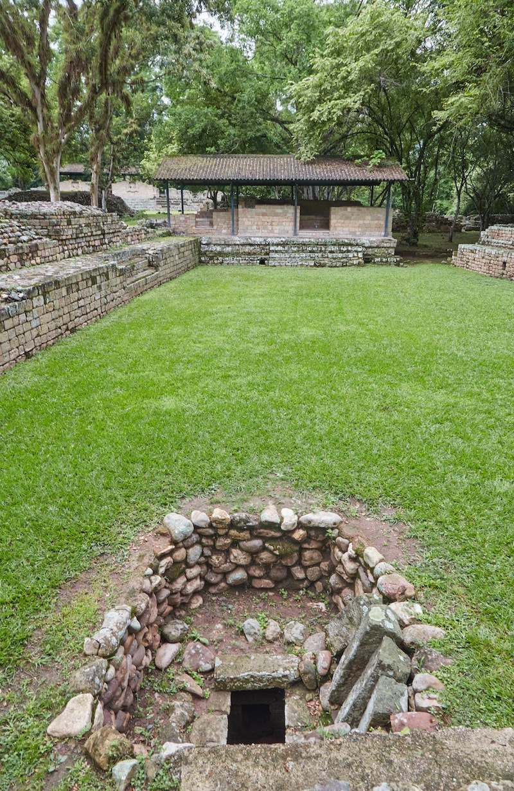
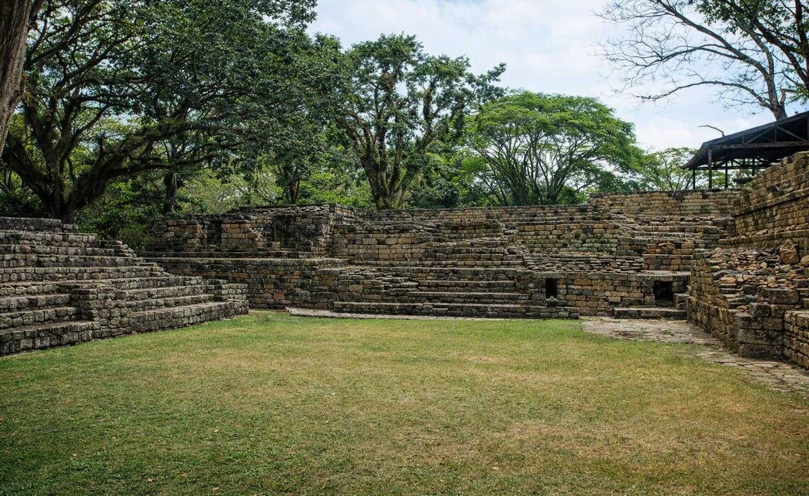

El sitio arqueológico de Los Sepulturas, ubicado a aproximadamente un kilómetro y medio al este del Grupo Principal de Copán Ruinas, constituye el complejo residencial periférico más importante descubierto en el valle y una ventana única hacia la estructura social de la antigua civilización maya. Este asentamiento satélite, que estuvo densamente poblado durante el período Clásico Tardío, no funcionaba como un centro de pirámides ceremoniales, sino como el barrio privado donde habitaba la élite política, los nobles cortesanos, los científicos, los sacerdotes y la prestigiosa casta de los escribas reales.
